Deutsche Telekom zögert bei EU-KI-Gigafabrik-Ausschreibung
Deutsche Telekom zögert bei EU-KI-Gigafabrik-Ausschreibung
Ausgabe vom 7. August 2026
Alle Meldungen
Netz & Technik
Deutsche Telekom zögert bei EU-KI-Gigafabrik-Ausschreibung
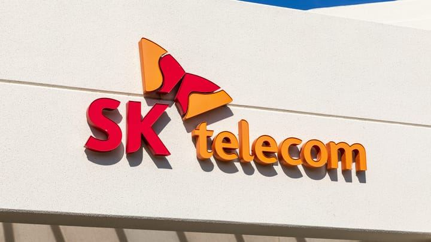
SK Telecoms Gewinn springt 67% durch KI-RechenzentrenTarife & Angebote
 Jio bündelt OTT und unlimitiertes 5G für 200 Rupien
Jio bündelt OTT und unlimitiertes 5G für 200 Rupien
 MTN startet Reise-eSIM mit Telna in Afrika
MTN startet Reise-eSIM mit Telna in Afrika
 Telekom-Flatrate mit Unlimited-Daten für 34,95 Euro bei Freenet
Telekom-Flatrate mit Unlimited-Daten für 34,95 Euro bei Freenet
Satellit & Direct-to-Cell
 SpaceX plant eigenes terrestrisches Mobilfunknetz via Starlink
SpaceX plant eigenes terrestrisches Mobilfunknetz via Starlink
 Starlink will ländliche Breitband-Subventionen abschaffen
Starlink will ländliche Breitband-Subventionen abschaffen
 Starlink plant eigenes Small-Cell-Mobilfunknetz
Starlink plant eigenes Small-Cell-Mobilfunknetz
Regulierung & Politik
 Freiwillige Netzöffnung: Glasfaser und 5G geteilt
Freiwillige Netzöffnung: Glasfaser und 5G geteilt
Geld & Übernahmen
 AMD kauft KI-Inferenz-Startup Taalas für Edge-Lösungen
AMD kauft KI-Inferenz-Startup Taalas für Edge-Lösungen
Partnerschaften
 Indosat, Nokia und Nvidia planen 1-GW-AI-Fabrik
Indosat, Nokia und Nvidia planen 1-GW-AI-Fabrik
Vermischtes
Netz & Technik
29 Meldungen
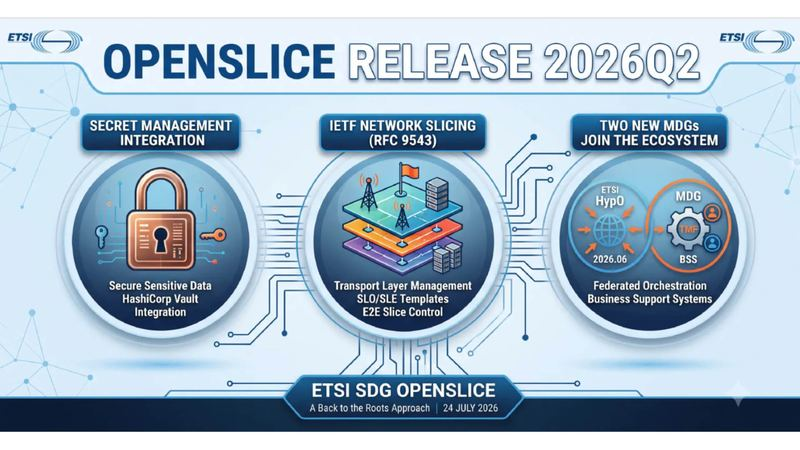
ETSI veröffentlicht OpenSlice-Update für automatisierte Netzdienste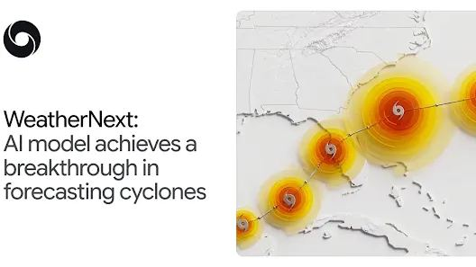
WeatherNext: Durchbruch in der Wirbelsturm-Vorhersage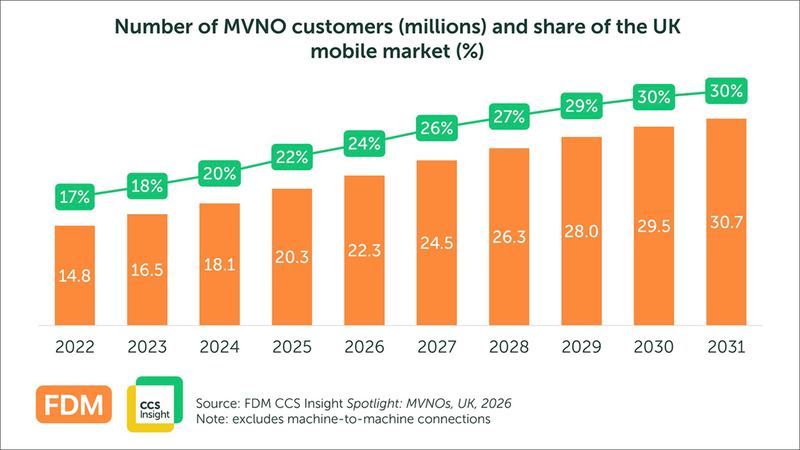
NTT Docomo Business startet B2B-Offensive mit IOWN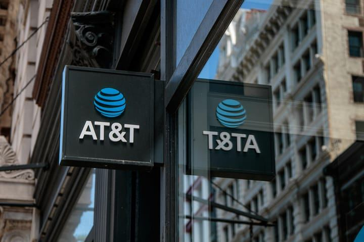
AT&T nutzt 600 MHz für bessere Abdeckung und Uplink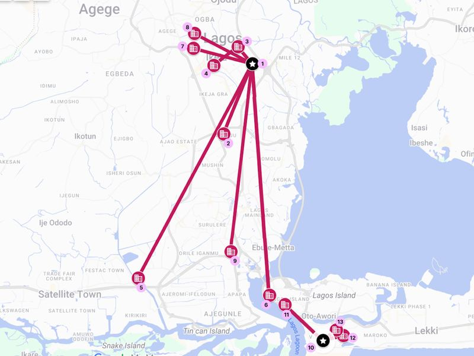
Liquid verbindet Unternehmen per drahtloser Optik in Lagos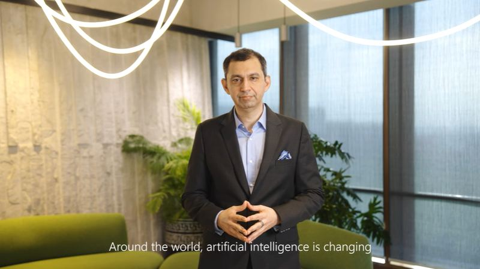
Microsoft investiert 20,5 Mrd. Dollar in Indien-Rechenzentren BBIX bindet Google Cloud direkt an IX-Netz an
BBIX bindet Google Cloud direkt an IX-Netz an
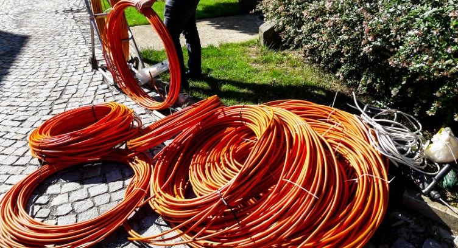
Lightcurve bringt 8 Gbit/s Glasfaser in Tacoma
Tarife & Angebote
29 Meldungen

 1&1 verliert Kunden nach Preiserhöhungen
1&1 verliert Kunden nach Preiserhöhungen
 Disney+ prüft kostenloses werbefinanziertes TV-Angebot
Disney+ prüft kostenloses werbefinanziertes TV-Angebot
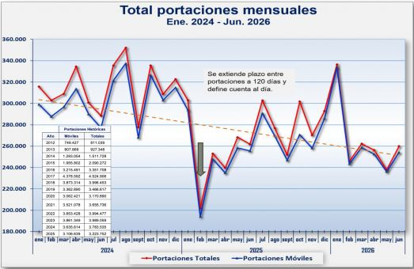
Claro gewinnt Portierungskampf in Chile im zweiten Quartal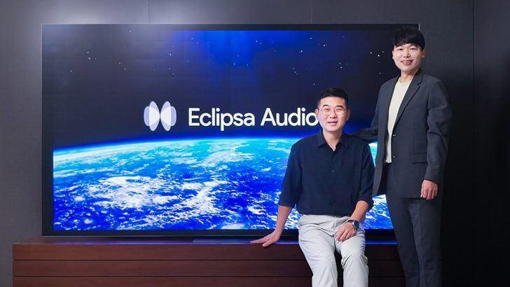
Samsung TV Plus führt 3D-Audio Eclipsa ein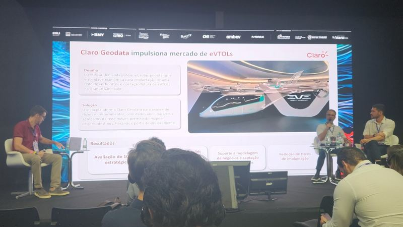
Claro vermarktet täglich zehn Milliarden Geodaten-Datensätze an B2B-Kunden
Satellit & Direct-to-Cell
18 Meldungen
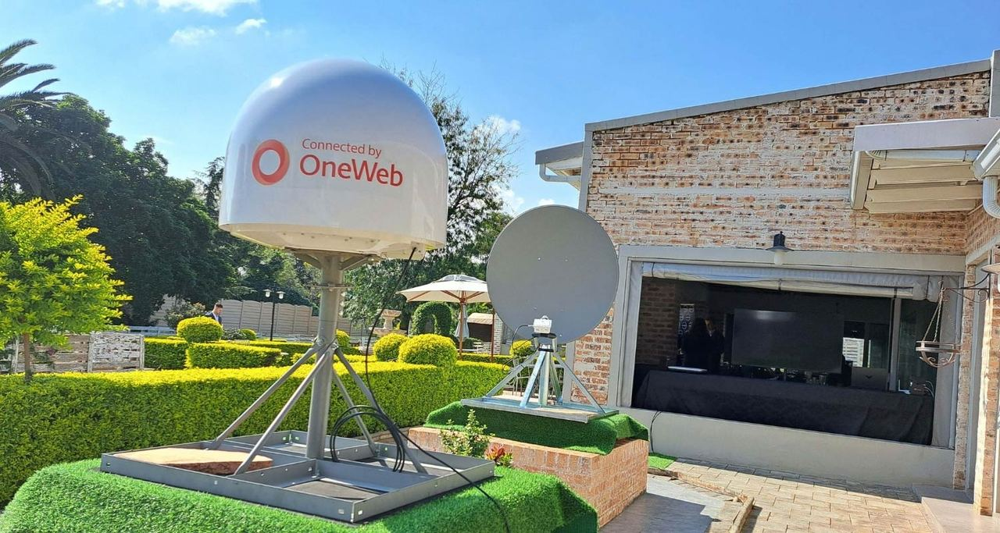
Eutelsat: Satelliten-Wachstum um 30% kompensiert Videorückgänge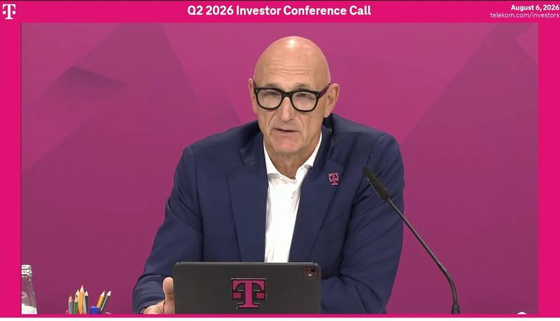
DT-Chef Höttges: Starlink keine Gefahr für Mobilfunker
Regulierung & Politik
17 Meldungen
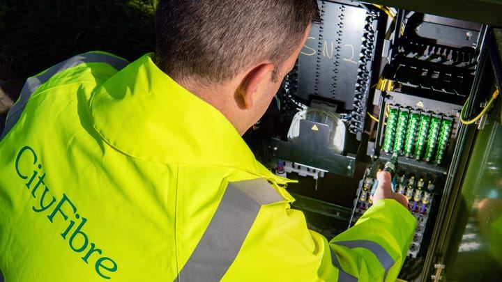
CityFibre greift Netomnia-Nexfibre-Deal erneut an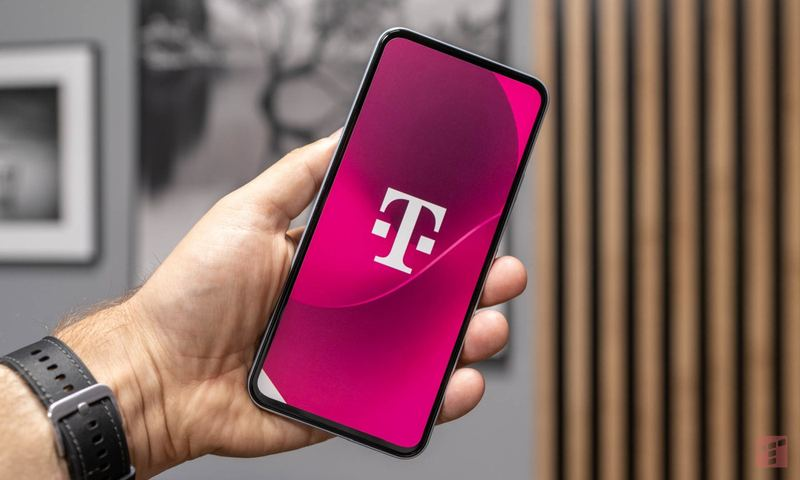
T-Mobile Polen ändert Abonnement-Regeln für Neukunden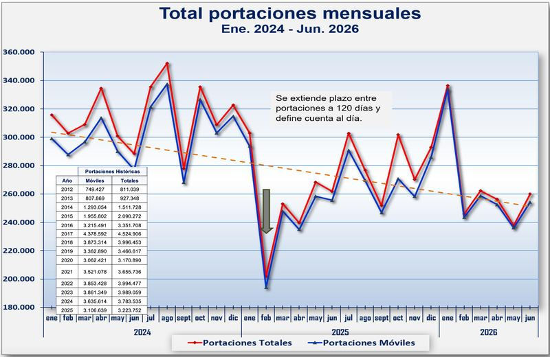
753.000 Nummern wechselten in Chile den Anbieter
Geld & Übernahmen
14 Meldungen
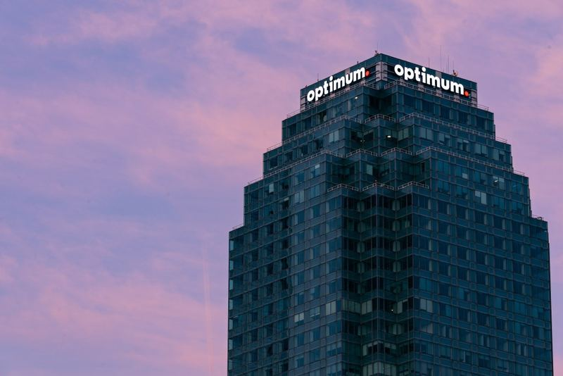
Optimum bremst Breitbandverluste mit Glasfaser und 1-Gig-Tarifen
Partnerschaften
17 Meldungen

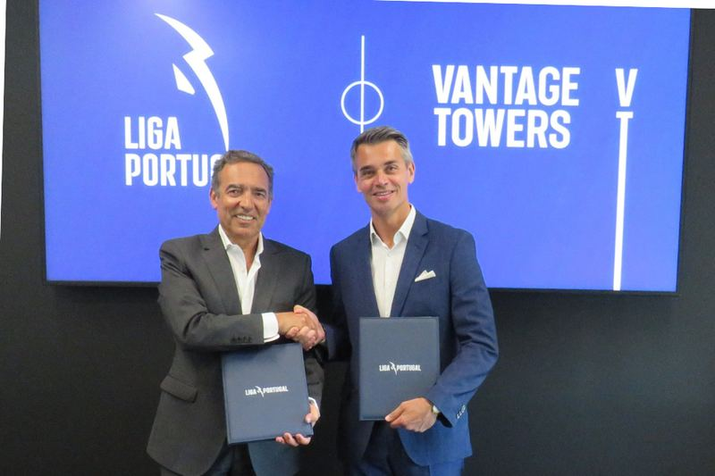
Vantage Towers schließt Liga-Portugal-Deal für Stadion-Konnektivität
Vermischtes
14 Meldungen
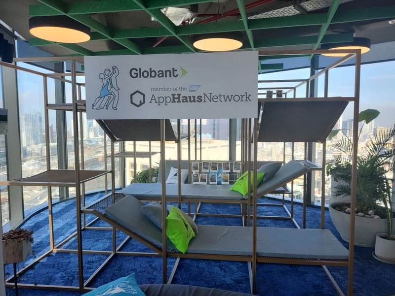
Globant launcht KI-native Serviceplattform Glob.AIFrühere Ausgaben
7. August 2026
381 neue Meldungen
6. August 2026
642 neue Meldungen
5. August 2026
426 neue Meldungen
4. August 2026
124 neue Meldungen
31. Juli 2026
220 neue Meldungen
28. Juli 2026
9 neue Meldungen
27. Juli 2026
49 neue Meldungen
26. Juli 2026
4 neue Meldungen
25. Juli 2026
11 neue Meldungen
21. Juli 2026
185 neue Meldungen
20. Juli 2026
27 neue Meldungen
19. Juli 2026
233 neue Meldungen
17. Juli 2026
257 neue Meldungen
16. Juli 2026
1991 neue Meldungen